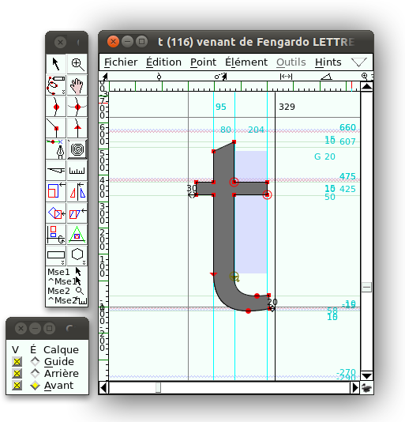
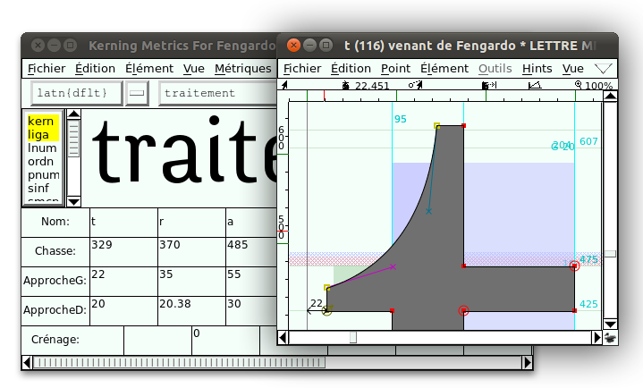

Comment modifier un glyphe d'une fonte
Vous êtes impatient, ça tombe bien, nous aussi ! Plongeons dans FontForge sans attendre.
Ouvrir la fonte
Au lancement de FontForge, le dialogue [Ouvrir fonte] apparaît par défaut. Le bouton [Nouvelle fonte] n'est qu'une option, voir le chapitre « Comment créer une fonte ». Naviguer au besoin et pointer un fichier de fonte, qui peut être de divers formats, mais pour démarrer, choisissez soit une police Opentype de type .otf, soit un fichier source de FontForge au format .sfd.
Dans cet ouvrage, nous allons modifier la police Fengardo de Loïc Sander (ouverte plus largement à l'occasion de la rédaction de ce livre, voir le chapitre « À propos de ce livre ») disponible au format .otf sur le site akalollip1 .

Si seule la source Truetype, de type .ttf est disponible, voir le chapitre « Formats ouverts ».
La fenêtre de fonte
La fenêtre de fonte avec la table des caractères de la fonte s'ouvre sur une partie de l'écran. Vous pouvez mettre la fenêtre en plein écran pour naviguer plus aisément dans tous les glyphes disponibles, affichés dans des cases représentant approximativement leur corps. La disposition des glyphes dans ce tableau dépend de l'encodage utilisé pour son affichage, le plus souvent Unicode au démarrage (l'encodage est spécifié dans la barre de titre de la fenêtre, à droite du nom de la fonte). Avec l'option du menu Codage > Compacté, l'ordre d'affichage est modifié pour repousser les glyphes ne contenant pas d'information en fin de tableau, cela permettant d'accéder plus rapidement aux glyphes existants. Au double-clic sur un glyphe, sa fenêtre d'édition s'ouvre.

Pour chercher un glyphe particulier, utiliser Vue > Aller au glyphe. Vous pouvez aussi agrandir ou réduire l'affichage avec le menu Vue > Agrandir ou Vue > Réduire, ou encore en tournant la molette de la souris lorsque la touche [Ctrl] est enfoncée.
Ouvrir la fenêtre d'édition
Nous décidons de faire remonter dans le temps l'ancrage historique de cette fonte récente en transformant la partie gauche de la barre horizontale du t en tracé oblique, ce qui fait référence dans certaines classifications typographiques aux linéales humanistiques2.
Pour le dire en utilisant des termes typographiques, passer d'une ascendante simple avec une traverse de part et d'autre vers un apex en haut, une oblique de transition et une traverse à droite. Pour mieux appréhender les termes typographiques, n'hésitez pas à vous reporter au glossaire en fin d'ouvrage.
Pour ce faire, double-cliquez (ou Fenêtre > Ouvrir fenêtre de glyphe) et la fenêtre d'édition de glyphe à proprement parler apparaît, ainsi que la palette d'outils et la palette de calques. Par défaut, seulement le contour de glyphe est affiché, avec ses différents points d'ancrage et de contrôle. La logique de l'édition de la lettre est très proche de celle d'un logiciel vectoriel courant comme Inkscape : elle repose sur le déplacement des poignées associées à ces points. Pour voir le glyphe avec une couleur de remplissage et pas uniquement en contour, choisissez Vue > Voir > Remplissage (Vue > Show > Fill) de la fenêtre d'édition de glyphe.

Avec le pointeur, déplacez un des points pour essayer, et annulez l'opération. Puis sélectionnez les trois points qui vont être remplacés par l'oblique en cliquant sur chacun tout en gardant la touche [Maj] enfoncée ou en traçant un rectangle autour de ces points (ils sont alors affichés sous forme de carrés verts).

Supprimez ces 3 points en appuyant sur la touche [Suppr] de votre clavier ou en ayant recours au menu Édition > Supprimer, ce qui transforme le tracé de la lettre en contour ouvert et le remplissage disparaît.
Sélectionnez un des points terminaux nouvellement créés par la suppression, puis avec l'outil plume, cliquez sur l'autre point final. FontForge dessine le vecteur entre les deux et rétablit le remplissage en refermant le tracé.

Observez la compensation optique de la courbe du bas du t (soit le fait que cette courbe descend plus bas que la ligne de base). Vous pouvez compenser optiquement les formes pointues qui viennent d'être produites en déplaçant légèrement les deux points vers le haut et vers la gauche. Pour ne les déplacer qu'orthogonalement, utilisez les touches flèche gauche et flèche haut.
Puis transformez l'oblique rectiligne vers une courbe légèrement concave. Sélectionnez le point du haut, l'apex, et pour obtenir les points de contrôle, convertissez-le avec le menu Point > Convertir en point curviligne. Deux points de contrôle sont créés, mais le point, devenu curviligne, arrondit maintenant de manière grotesque le sommet du t.

Rétractez le point de contrôle de droite devenu inutile et représenté par une croix rose, en le ramenant sur le point d'ancrage, ce qui le fait disparaître. Déplacez le point d'ancrage pour créer la douce cambrure que cette partie de la lettre appelle, ou déplacer directement le trait oblique du haut de cette lettre (cette méthode est pratique mais moins précise). Par acquis de conscience, convertissez-le en point angulaire (menu Point) pour mieux le faire correspondre à sa nouvelle nature.

Pour influer sur cette courbe plus fortement à partir de l'autre bout de la courbe, adoptez une autre approche : clic-droit (ou cliquez avec la touche Ctrl appuyée) sur le point, et un menu très complet apparaît, offrant une série d'opérations possibles sur le point. Choisissez Infos... et découvrez la fenêtre [Infos points] qui donne accès à toutes les caractéristiques de chaque point. À ce stade, les deux points de contrôle ont toutes leurs valeurs à zéro. Tentez d'entrer des nombres dans les deux champs Décalage et voyez apparaître un point de contrôle.

Fermez alors la fenêtre et continuez à déplacer ce point à l'aide du pointeur jusqu'à obtenir la portion de courbe désirée.

Le t semble à présent terminé. Il reste une étape importante, celle de faire fonctionner ce dessin isolé en tant que glyphe, c'est-à-dire de le faire cohabiter avec d'autres glyphes. En d'autres mots, il faudra tester son action visuelle sur la composition typographique, grâce à la fenêtre des métriques, accessible via le menu Fenêtre > Ouvrir la fenêtre de métriques. Tapez un mot contenant plusieurs t, au début, milieu et fin afin de les faire fonctionner avec différentes proximités. Pour cacher la grille des métriques et se concentrer sur le rendu visuel, menu Vue > Montrer la grille > Cacher (Hide).

Sans fermer cette fenêtre et pour mieux intégrer la nouvelle forme du t, revenez dans la fenêtre d'édition de glyphe et essayez de biseauter les deux pointes pour amener plus de cohérence avec le style de dessin de lettre de départ : elle semble en effet trop pointue sur la partie que nous avons modifiée en comparaison des autres glyphes.
Au clic-droit n'importe où dans la fenêtre, choisissez Ajouter un point angulaire et cliquez sur une portion de la courbe, près de l'apex. Puis reprenez le pointeur et déplacez le point nouvellement créé, qui comporte deux points de contrôle, dont un est inutile.
Pour le rétracter, sélectionnez les deux points d'ancrage qui forment maintenant l'apex et allez dans le menu Point > Convertir en ligne pour créer une petite portion de ligne. Puis alignez-les horizontalement avec Élément > Aligner > Moyenne des points.
De plus en plus à l'aise, appliquez rapidement cette méthode sur la pointe gauche.

Voilà le t modifié, et vous voyez que les modifications se sont progressivement affichées aussi dans la fenêtre de métrique.

Peut-être qu'à côté d'autres glyphes, cette nouvelle forme fonctionnerait mieux si vous rameniez un peu la partie gauche vers le fût du t, vers sa barre verticale centrale ?
Déplacez de 10 unités les deux points gauches qui forment maintenant la pointe. L'oblique est un petit peu plus aiguë, la référence à la calligraphie un peu plus nerveuse, ce qui semble intéressant. Mais l'espace vide ainsi créé à gauche du glyphe est devenu un peu trop important, il faut le réduire.
Dans la fenêtre de métriques, réduisons de 10 unités la valeur de l'approche gauche (ApprocheG) du t, ainsi que sa chasse (sa largeur) de manière à ce que l'approcheD (droite) ne fasse pas les frais de cette modification par compensation. Notre mot test semble maintenant mieux inter-lettré. Bra-vo !
Trois opérations sont maintenant nécessaires avant de pouvoir tester la fonte en situation réelle, c'est-à-dire de l'utiliser pour composer du texte dans une application :
- générer la fonte à proprement parler ;
- permettre aux autres applications d'accéder à la fonte, et donc l'installer dans notre système ;
- la retrouver dans le menu fontes de cette application, c'est-à-dire lui donner un nom différencié.
Vous allez commencer par cette dernière étape, à l'aide de Éléments > Infos fontes. Le nommage étant une étape importante et sur laquelle de nombreux enjeux reposent, voir le chapitre « Recommandations de nommage » à ce propos, vous pouvez utiliser un nom temporaire actuellement, par exemple Rennesgardo, à introduire dans les 3 champs Nom de la fonte, Nom de la famille et Nom humain.

Si votre fonte est destinée à être redistribuée rajoutez vos noms dans le champ Copyright bien sûr, sans effacer le nom des autres co-auteurs. Renseignez ensuite les éléments FONTLOG qui permettent de mémoriser vos apports spécifiques. Pour intégrer cette information directement dans le fichier FontForge, vous pouvez saisir l'information en cliquant sur FONTLOG dans la colonne gauche de l'Infos Fonte et entrant des informations par exemple sous la forme :
- 2011-11-07 (votre nom) (RennesGardo) Version1.1.
modified t apex
Copiez cette donnée, puis affichez le fichier FONTLOG livré avec le dossier source de fonte (release), s'il existe, et ajoutez-y cette information de manière à ce qu'elle soit visible à tout utilisateur, même s'il n'utilise pas FontForge.
Au moment de la validation, FontForge vous propose de choisir pour vous un identifiant chiffré unique. C'est une étape optionnelle en effet cet identifiant unique est peu utilisé. /p>
Vous allez maintenant générer la fonte avec Fichiers > Générer la fonte. Vous pouvez choisir le format .otf appelé dans le menu OpenType (CFF). FontForge détecte sans doute une série de problèmes potentiels, à corriger pour la version finale idéalement. Mais à ce stade, lisez la liste d'erreurs détectées, puis confirmez l'enregistrement !
Et enfin installez cette fonte sur votre système, peut-être par le biais d'un gestionnaire de fontes comme FontMatrix voir le chapitre « Outils complémentaires ».
C'est le moment, enfin, de tester votre fonte dans le logiciel de votre choix !